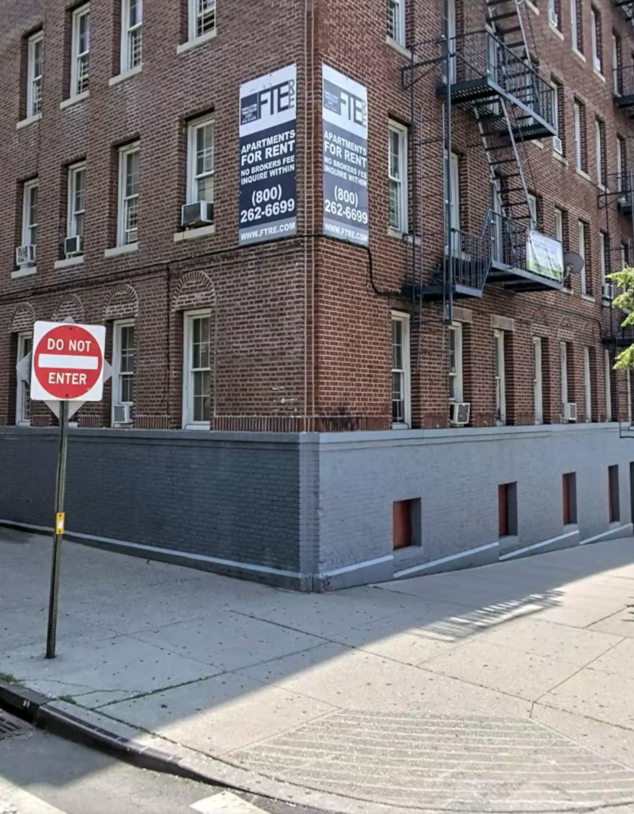

Eviction cases increase in the Bronx after federal moratoriums end
The increase in eviction letters has been on the rise and has been affecting Latinos in the Bronx, especially after several protections that helped prevent these cases ended last year.
By: Nathaly Cisneros
December 7, 2023
 'Apartments for rent' sign outside building in the Bronx in Kingsbridge. Credit: Nathaly CisnerosRent has been high lately and it has caused several evictions in New York City. Prices have increased after federal moratoriums ended in 2022 affecting Latinos, especially in the Bronx.
"Rent has gone up $200 in my building since September and it hasn't been easy to afford it", said Lorenzo Tapia, a 56-year-old construction worker. "Between me and my family of three, we split $2,550 in rent each month, about $850 each", Tapia added.
When a lease expires for most apartments or homes in New York City, the landlord may not renew it for any reason and raise the rent as much as they want.
A landlord needs a court order in order to present an eviction notice on a tenant and give them at least a 14 days notice, it is the law, and if that is not complied with, they could be fined and arrested. Other illegal actions a landlord can take against a tenant to evict a tenant include: changing or adding doorlocks, turning electricity gas and/or water off, removing or destroying personal belongings, and forcing/threatening to remove the tenant.
 There have been many buildings in the Bronx that have signs that say 'Apartments for rent'. Credit: Nathaly Cisneros
There have been many buildings in the Bronx that have signs that say 'Apartments for rent'. Credit: Nathaly Cisneros
However, The City has investigated that NYPD rarely arrested landlords for illegal evictions in 2020 and 2021. An NYPD officer mentioned that only nine arrests for illegal evictions were on record during that time period.
Tenants can count on current legislative proposals to help them avoid evictions in New York State. Good Cause Eviction, protects tenants from unreasonable rent increases and discriminatory or retaliatory evictions.